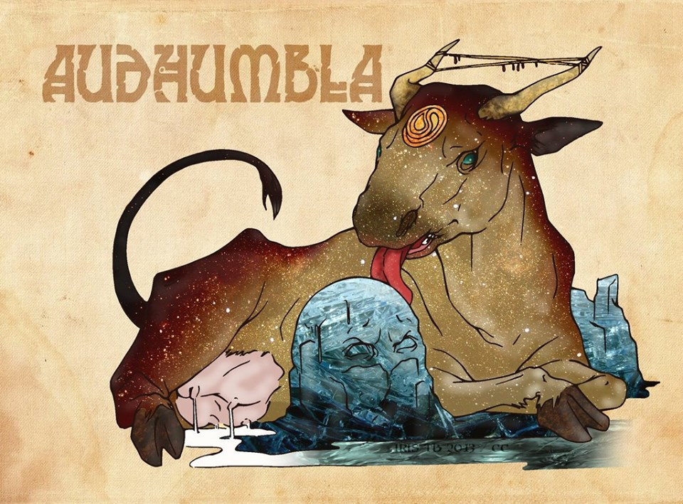

Antes que existiera el primer ser vivo en el universo se extendía por el norte del espacio una bruma
alimentada por once ríos venenosos que se originaban en su interior. Esta bruma formaba uno de los primeros
mundos llamado Nifleheim, el cual se caracterizo por su baja temperatura. Por el sur de Nifleheim se hallaba
Muspellheim, un lugar extremadamente caluroso, sin tierra ni cielo, únicamente fuego y lava que contrastaba
con las brumas que se desplazaban por su alrededor.
Aunque Muspellmeim y Nifleheim se encontraban muy cerca uno del otro, en medio estaba el “abismo enorme”
conocido también como Ginnungagap, el cual era un espacio vacío en donde no existía nada. Ginnungagap se
lleno en un momento por los ríos venenos de Nifleheim lo que provocó la solidificación de los ríos como
consecuencia de las brasas de Muspellheim. Se formaron vastos glaciares y se originó la vida, pero no en un
dios o en un ser humano, sino en forma de un gigante llamado Ymir y una vaca sin cuernos.

La vaca desde que nació, le gusto pasar los días lamiendo la sal de los bloques de hielo y alimentando con
su leche a Ymir, con el paso del tiempo la vaca saco a la luz el primer dios del hielo, Buri. Desde este
momento empezó a brotar vida de todas partes, Ymir provoco por medio de su sudor corporal nuevas
generaciones de gigantes y Buri con una de las hijas de Ymir tuvo al segundo dios Bor, el cual después se
volvió el padre de los tres dioses mas importantes en la formación de los 9 reinos, Odín, Vili y Ve. Odín
junto con sus hermanos no les alegraba vivir en una tierra tan vacía, entonces decidieron matar al gigante
Ymir para formar con el cráneo el cielo, con el cuerpo la tierra y las montañas, y con su sangre los ríos.
Los hijos de Ymir después de su muerte fueron distribuidos por los territorios formados. Cada reino se
conectaba por medio de las ramas del árbol Yggdrasil y el territorio de los dioses, Asgard, se coloco en la
cima.